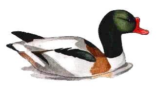

Shelduck
An irregular visitor to Chard reservoir.

12/01/68 - 2 birds
12/12/68 - Single bird. (DEP)
26/04/80 - 2 birds
18/03/84 - Single bird
04/12/87 - 7 birds
14/12/91 - 2 birds
18/12/94 - Single bird seen briefly, before flying off at 10:00 am
02/01/98 - Single bird
09/03/98 - 2 birds
??/12/98 - Single bird
03/01/99 - 2 birds
16/02/99 - 2 birds
13/05/99 - Single bird
19/12/99 - Single bird
30/01/00 - 2 birds
2001 - 2 birds on 21/01, then later some long staying juvenile birds starting with 5 on 18/08, 6 on 19/08 stayed for a few days, then decreasing to 2 by the end of August. One bird stayed through to 22/09
2002 - Ones or twos seen on various dates in February, March, April, May, September and December
2003 - One or two seen on 5 dates in February
2004 - 4 on 14/02, 3 on 18/07 and 7 immatures on 31/07
2005 - 2 on 08/03, 1 on 21/03 and 1 on 16/04
2006 - none reported
2007 - 2 on 01/02, 1 on 11/05 and 1 immature from 11/09 to 24/09
2008 - 1 on 01/07/08, 4 imm. on 19/07/08, 1 on 22-23/10/08 and 3 on 31/10/08
2009 - none reported.
2010 - none
2011 - 4 on 26/01, 2 on 31/01, 1 imm. stayed for 6 days from 31/07, 1 imm. on 18/09
2012 - none
2013 - 1 male on 18/05
2014 - none
2015 - 1 on 21/01 and 1 on 28/02
2016 - 3 on 13/09 and another 3 on 20/12
2017 - 2 on 06/02 and 2 on 20/05
2018 - none
2019 - 2 on 02/05
2020 - none
2021 - 1 on 04/03. 1 on 19/03. Pair on 09/05
2022 - 1 female on 24/04, 3 on 17/08 and 1 juvenile on 20/08
2023 - 2 on 17/01 and 1 on 29/11
2024 - 1 on 17/03, 2 on 03/04, a juvenile on 18/07, 1 on 15/08 and 1 on 04/11
2025 - 1 on 07/05, 1 immature on 25/07 and 1 on 11/08